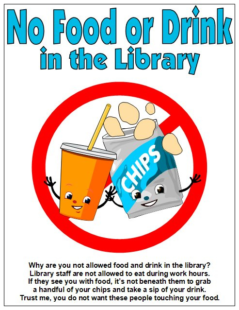

1. Speak as you normally would, but keep your conversations or phone calls at a level not to disturb others. Many users come to the library to get away from noise and crowds.
2. Return your checked out items on time, this will save you money in paying library late fees.
3. Eating in the library is ok, but not foods that have strong odors, such as fried chicken.